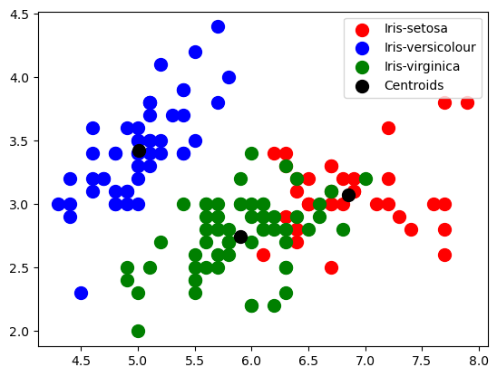

In this blog we will talk about using K-means clustering on Iris data set.
Unsupervised Learning
Unsupervised learning works with unlabeled data where the algorithm finds patters and relationships in the data on its own without any guidance.
Unsupervised learning is used in clustering and dimensionality reduction. Clustering is used for grouping similar data points in the form of clusters such that points belonging to one cluster are homogeneous to each other compared to points belonging to other clusters. Dimensionality reduction is used to limit the numbers of features in our data set while preserving as much information as possible in the process.
K- means clustering
K-means clustering is used to find groups or clusters in the data with the number of clusters denoted by the variable K- means clustering is an iterative algorithm where each point is assigned to one of the clusters and this process repeats until final clusters are formed.
After running K-means on a data set we get the following outputs:
a- K centroids- There are the centroids for each of the K clusters.
b- We get labels for the training data which denotes which points belongs to which clusters.
Iris data set
This data set contains 3 classes of flowers namely Iris Sentosa, Iris Versicolour and Iris Virginica. The features in this data set are sepal length, sepal width, petal length and petal width. This is one of the first and basic data sets which students encounter when they start learning machine learning. We will be using K means which is an unsupervised machine learning algorithm to predict the flower classes.
In the code below we display features of the Iris data set.
from sklearn import datasetsimport pandas as pdimport numpy as npimport matplotlib.pyplot as pltimport seaborn as snsimport warningswarnings.simplefilter("ignore")from sklearn.cluster import KMeansiris = datasets.load_iris()# Converting Iris data into a pandas data frameiris_df = pd.DataFrame(data=iris.data, columns=iris.feature_names)iris_df
Below code shows how K-means is initialized using sklearn.
# Using K means clustering on Iris datasetkmeans = KMeans(n_clusters=3,init ='k-means++', random_state =20)kmeans
KMeans(n_clusters=3, random_state=20)
In a Jupyter environment, please rerun this cell to show the HTML representation or trust the notebook. On GitHub, the HTML representation is unable to render, please try loading this page with nbviewer.org.
Finally we perform K-means clustering on our data set and the assigned clusters are shown in color as shown below.
# Visualizing the clusters formed by K means on Iris datasetplt.scatter(X[y_pred ==0, 0], X[y_pred ==0, 1],s =100, c ='red', label ='Iris-setosa')plt.scatter(X[y_pred ==1, 0], X[y_pred ==1, 1],s =100, c ='blue', label ='Iris-versicolour')plt.scatter(X[y_pred ==2, 0], X[y_pred ==2, 1],s =100, c ='green', label ='Iris-virginica') # Centroids of each of the clusters is shown in blackplt.scatter(kmeans.cluster_centers_[:, 0], kmeans.cluster_centers_[:,1],s =100, c ='black', label ='Centroids') plt.legend()plt.show()

Fig 2- Visualizing the clusters formed by K means on Iris dataset
Observations- We can see that K means has formed a well separated cluster for versicolor while there is overlapping between clusters of virginica and sentosa.
Conclusion-
We have successfully performed K-means clustering on the Iris data set.
---title: "K means clustering on Iris dataset"author: "Rahul Satoskar"date: "2023-12-03"categories: [Clustering]image: "clusters.jpg"---In this blog we will talk about using K-means clustering on Iris data set.# Unsupervised LearningUnsupervised learning works with unlabeled data where the algorithm finds patters and relationships in the data on its own without any guidance.Unsupervised learning is used in clustering and dimensionality reduction. Clustering is used for grouping similar data points in the form of clusters such that points belonging to one cluster are homogeneous to each other compared to points belonging to other clusters. Dimensionality reduction is used to limit the numbers of features in our data set while preserving as much information as possible in the process.# K- means clusteringK-means clustering is used to find groups or clusters in the data with the number of clusters denoted by the variable K- means clustering is an iterative algorithm where each point is assigned to one of the clusters and this process repeats until final clusters are formed.After running K-means on a data set we get the following outputs:a- K centroids- There are the centroids for each of the K clusters.b- We get labels for the training data which denotes which points belongs to which clusters.# Iris data setThis data set contains 3 classes of flowers namely Iris Sentosa, Iris Versicolour and Iris Virginica. The features in this data set are sepal length, sepal width, petal length and petal width. This is one of the first and basic data sets which students encounter when they start learning machine learning. We will be using K means which is an unsupervised machine learning algorithm to predict the flower classes.In the code below we display features of the Iris data set.{{< embed iris_clustering.ipynb#Iris echo=true >}}Below code shows how K-means is initialized using sklearn.{{< embed iris_clustering.ipynb#kmeans echo=true >}}The below code shows for each data point to which cluster it belongs to.{{< embed iris_clustering.ipynb#cluster_centers echo=true >}}Finally we perform K-means clustering on our data set and the assigned clusters are shown in color as shown below.{{< embed iris_clustering.ipynb#Iris_clustering echo=true >}}**Observations- We can see that K means has formed a well separated cluster for versicolor while there is overlapping between clusters of virginica and sentosa.**# Conclusion-We have successfully performed K-means clustering on the Iris data set.# Link of Python notebook in Gitgub Repository-<https://github.com/rahulsatoskar/CS-5805-Machine-Learning-Blogs/blob/main/Python%20notebooks/iris_clustering.ipynb>